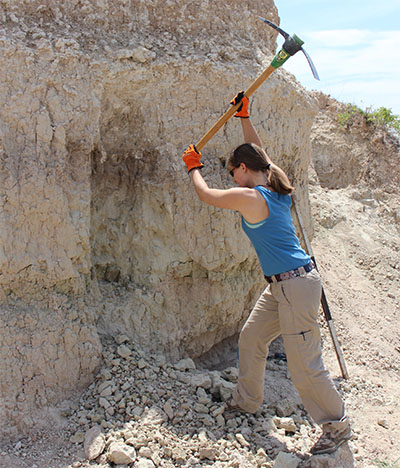
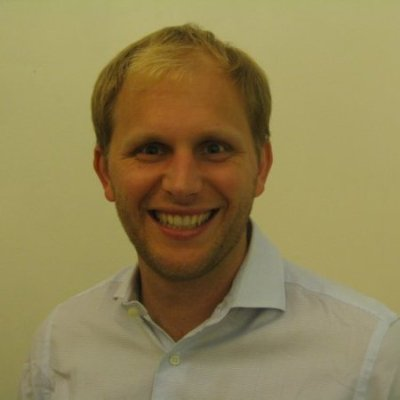
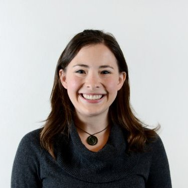

Terrestrial Paleoclimate and Tectonics members

Katie Snell
Assistant Professor
Postdoc, Caltech 2011-2014
PhD, UC Santa Cruz 2011
BA, Colorado College 2002
Katie is interested in terrestrial paleoenvironmental reconstruction, paleoaltimetry, diagenesis and modern depositional processes. She uses a range of sedimentology and stable isotope geochemistry tools to address these questions.

Brett Davidheiser-Kroll
Research Associate and CUBES-SIL Lab Manager
PhD, University of Glasgow 2014
MS, Vrije Universiteit Amsterdam 2011
BS, UC Berkeley 2006
Brett's research interests include stable isotopes in mineral exploration, and technological innovations in stable isotope analysis. He is currently putting those skills to use designing a new automated CO2 cleaning system for clumped isotope analyses.

Vikki Crystal
PhD student
BA, Colorado College
Vikki started digging in her backyard looking for rocks and fossils when she was a small child and still hasn’t stopped. Now, her current research interests include climatic, environmental and faunal changes associated with the Cretaceous- Paleogene Boundary.